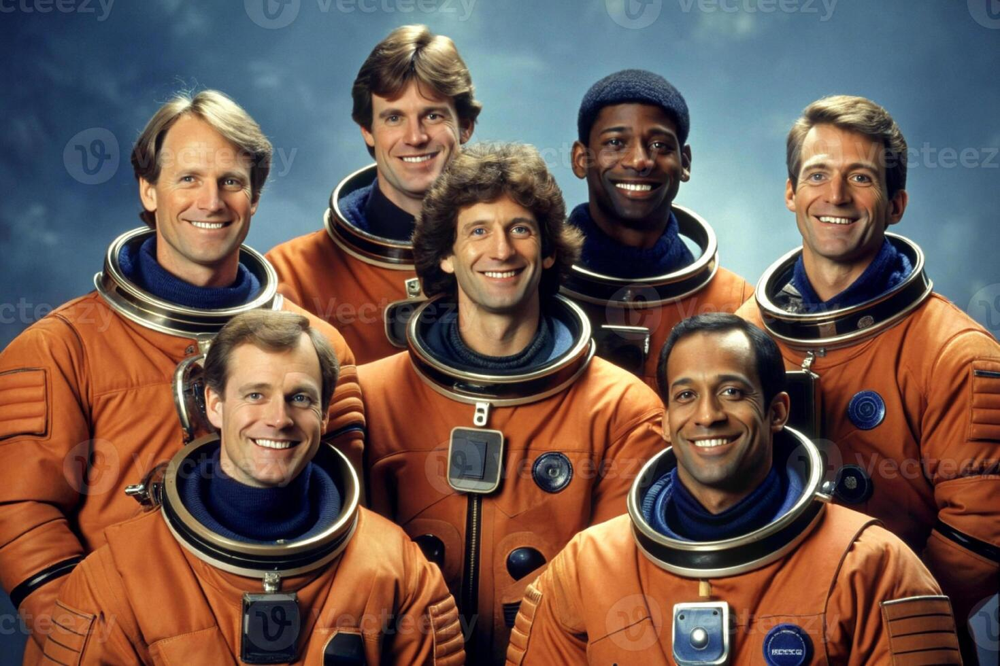

Stellar Horizon Tours was founded with a singular vision: to democratize space exploration. We believe that the "Overview Effect"—the cognitive shift reported by astronauts when viewing Earth from space—is an experience that can unite humanity. When you look back at our planet from the darkness of space, you don't see borders, wars, or politics. You see a fragile, glowing blue marble that connects us all. Our goal is to share this perspective with as many people as possible, inspiring a new generation of environmental stewards and global citizens.

The Alpha Team preparing for the first civilian launch.
"The Earth is the cradle of humanity, but mankind cannot stay in the cradle forever." — Konstantin Tsiolkovsky
Question: Is there an age limit?
We have successfully flown passengers ranging from 18 to 82 years old. As long as you pass the basic medical screening, space is open to you.
Our Certifications
Stellar Horizon Tours is fully licensed by the FAA for commercial spaceflight operations. Additionally, all our mission specialists are retired personnel from
NASA and the ESA ensuring that international safety standards are met on every flight.
Future Projects Status
We are constantly building the future. Here is the current status of our upcoming habitats: